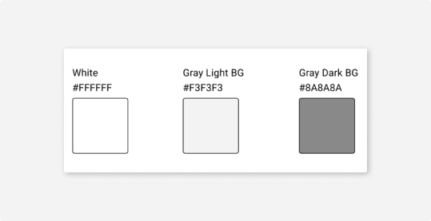
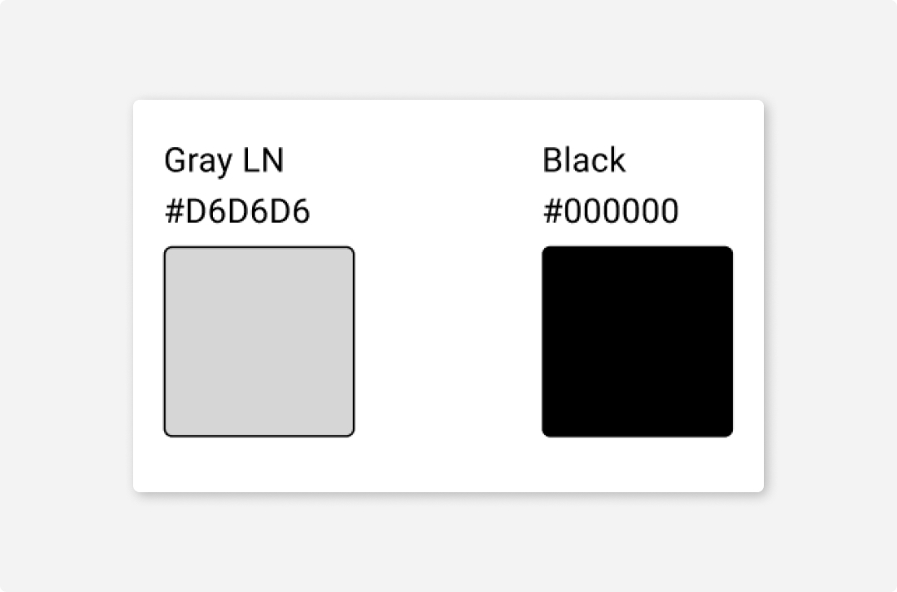
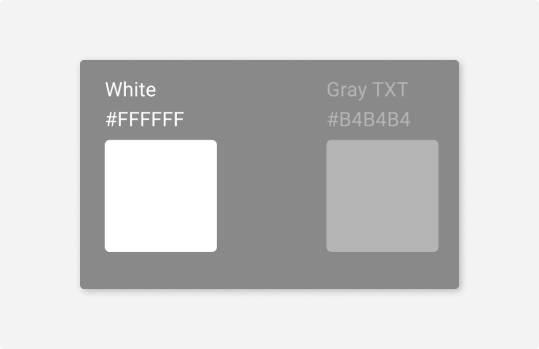
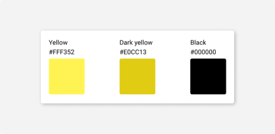
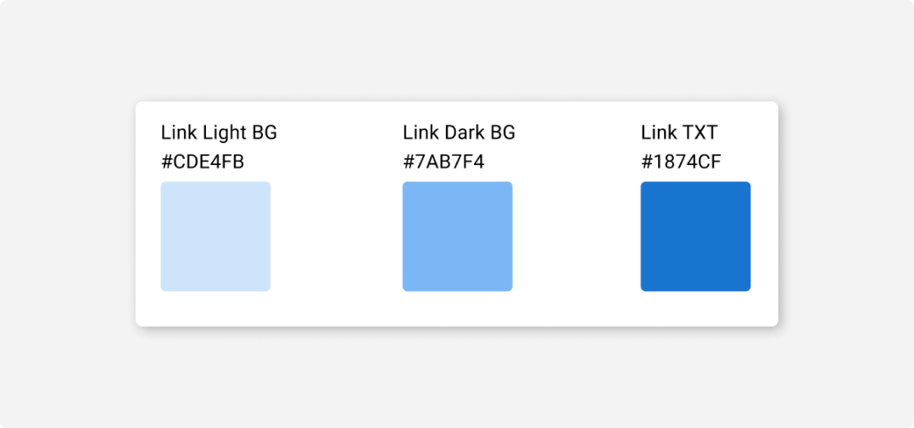
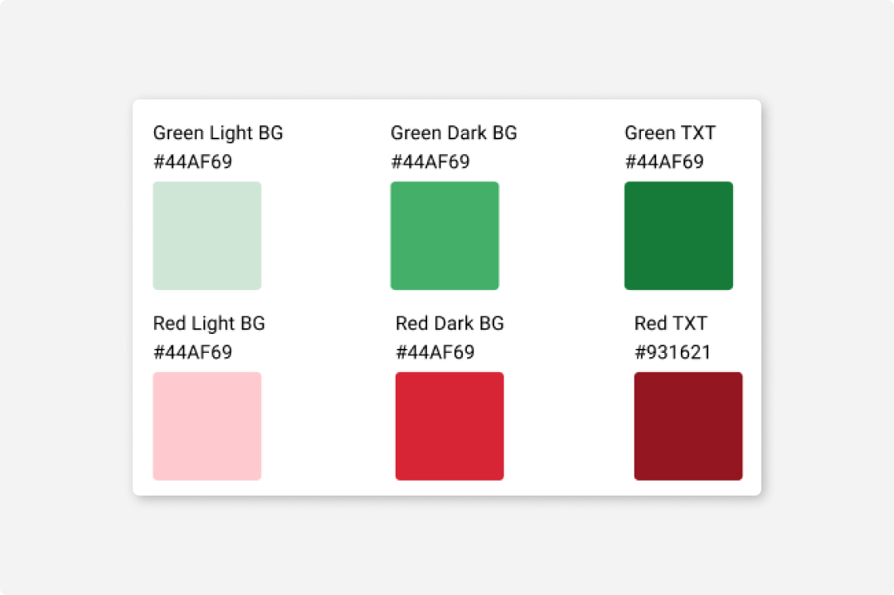

В интерфейсе мы используем минимум цветов, и используем их только для передачи смысла. Цвет — это инструмент управления вниманием пользователя: он помогает выделять главное, а не отвлекать от того, что важно.
Каждый цвет в интерфейсах CURSA решает определенную задачу:
Черный, белый, и оттенки серого — рабочие цвета для вывода и структурирования информации на экране.
Смысловые цвета: зеленый, красный — привлекают внимание и помогают быстрее считывать информацию с экрана.
Фирменный цвет — помогает сервису отличаться от других, а пользователю понимать, куда он попал.
#1
Черный, белый, серый
Мы используем «чистый» серый цвет. Он выглядит нейтрально и сочетается с остальными цветами в интерфейсе.
Фон
Серый фон делит контент на смысловые блоки и группирует элементы на странице.
Для фона мы используем два цвета:
Важно, чтобы граница между двумя фонами была видна на любом мониторе. Если граница фонов имеет слабый контраст и ее пропадание может нарушить структуру страницы, используйте разделительную линию или тень.
Линия
Цвет разделительной линии #D6D6D6 или #000000.
Линия используется:
для разделения смысловых частей на экране;
для усиления контраста на границе двух фонов;
в качестве однопиксельной тени.
Текст
Существует два оттенка для текста:
Основной (Black) — цвет для набора основного текста, текста в активных контролах, текста в полях ввода, надписей и иконок на кнопках.
Дополнительный (Gray TXT) — для подписей, комментариев, заголовков таблиц и текста в заблокированных контролах.

На темном фоне набирайте текст белым цветом #FFFFFF. Для дополнительного и неактивного текста используйте #B4B4B4.
#2
Смысловые цвета
Интерактивные элементы
Существует два стандартных цвета контролов — желтый #FFF352 и черный #000000. Этими цветами окрашиваются ссылки и элементы интерфейса, с которыми можно взаимодействовать. Темный желтый используется для создания интерактивных элементов.
Некоторые продукты в качестве цвета интерактивных элементов могут использовать фирменный цвет сервиса. В таких случаях фирменный цвет нужно использовать всегда, и он должен отвечать требованиям:
не должен быть похож на красный и зеленый, чтобы не нести дополнительный смысл;
должен быть насыщенным: контрастным фону и тексту.
В этом случае фирменный цвет надо использовать везде, где использовался основной желтый и подобрать к нему темный вариант для создания интерактивных элементов.
Цвет ссылок
При необходимости ссылки допускается выделять синим цветом. Выделение ссылок синим цветом является стандартным паттерном для html-страниц.
Зеленый и красный
Зеленый и красный цвета зарезервированы для обозначения положительного и негативного контекста.
Зеленый — для сообщений об успехе, удачном завершении, красный — для сообщений об ошибке, невозможности продолжить, неудачном завершении.
Эти цвета нельзя использовать с другим смыслом. Например, нельзя использовать красный, чтобы привлечь внимание к акциям, скидкам, обновлениям или чему-то подобному, что не прерывает сценарий и не является критически важным.
#3
Фирменные цвета
У каждого сервиса может быть свой фирменный цвет. Он помогает пользователю узнавать сервис. Используйте фирменный цвет в меню и логотипе.
Кроме этого фирменный цвет можно применять в качестве цвета ссылок и кликабельных элементов.